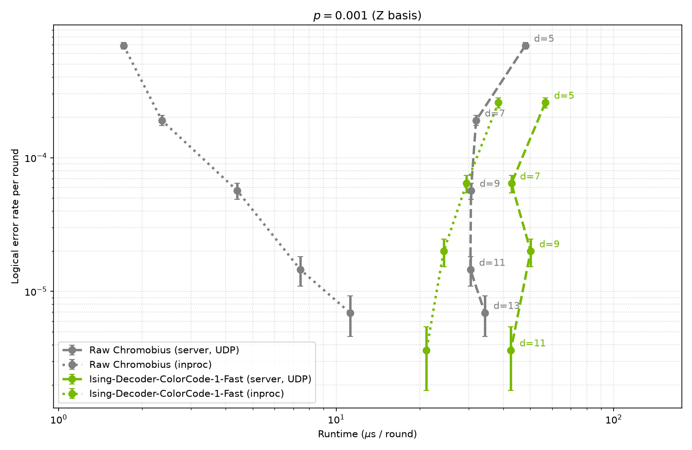

Ising Color-Code Emulator with Decoding Server
This example prepares and runs the Ising-Decoder-ColorCode-1-Fast neural-network predecoder using the CUDA-Q QEC realtime decoding server. It plots the logical error rate (LER) per round against the decode runtime per round, for two configurations:
chromobius— the Chromobius color-code decoder on its own.trt_decoder— the Ising predecoder, run on TensorRT, with Chromobius as the global decoder for the residual syndrome.
The syndromes come from Stim color-code memory experiments (distance
\(d\), \(d\) rounds, Z basis, physical error rate --p) and are
replayed by the playback emulator. Each runtime is measured
once per path between the emulator and the decoder (session):
inproc— the decoder runs inside the emulator process.server— adecoding_serverover UDP on the local machine.
Note
Realtime Decoding with CUDA-Q Decoding Server serves the surface-code Ising
predecoder from decoding_server, with syndromes sourced from a QPU kernel or an
FPGA. Here, the playback emulator replays the pre-sampled shots of the superdense color-code
memory circuit to each decoder on a fixed timing loop.
For starting the prebuilt Docker server and connecting clients, see Color-code-enabled AI decoder. The model preparation and benchmark on this page require the software listed below.
Prerequisites
Hardware
CUDA-capable GPU (for the TensorRT engine)
Software
CUDA Toolkit 12.6 or later
TensorRT 10.x libraries (
libnvinfer,libnvonnxparser), also needed when CUDA-Q QEC is built: the TensorRT decoder plugin is built only if TensorRT is found (see AI Predecoder with CUDA-Q Realtime)CUDA-Q SDK pre-installed (
cudaq_qecimports thecudaqPython package)CUDA-Q Realtime libraries (
libcudaq-realtimeand the UDP bridgelibcudaq-realtime-bridge-udp), used bydecoding_serverCUDA-Q QEC installed with
decoding_server, the playback emulator, and the TensorRT decoder pluginPython packages: the Ising-Decoding inference requirements (
code/requirements_public_inference.txtin its repository, includingchromobius,matplotlib,onnx,stim, andtorch), andhuggingface_hubfor thehfCLIModel access:
git, plus the gated model’s terms accepted on its page above and thehfCLI authenticated (hf auth login), as for the realtime decoding demo.
Running
From any scratch directory, with the CUDA-Q QEC Python environment set up:
python3 /path/to/examples/qec/color_code_demo/color_code_demo.py
The demo fetches pinned versions of Ising-Decoding and the model weights into
./deps (--weights uses a local copy instead); --help lists the
options. For each distance, the demo writes the detector
error model, exports the predecoder to ONNX, builds its TensorRT engine, and
replays the schedule through every decoder and session. It then writes the
results to results.json and the figure to color_code_demo.png.
All files go to the current directory.
Reading the Output
For each distance, Stim samples --shots shots (default 100,000) into one
schedule, which every decoder and session replays once. Each run prints and
records:
The runtime per round: the time until the last correction returns, divided by the rounds decoded.
The LER per round: the fraction of shots whose correction differs from Stim’s true observable flip, converted to a per-round rate.
The generated figure uses grey for Chromobius and green for the Ising predecoder. Points with no logical errors are not drawn. The figure below shows example output from an earlier run with 100,000 shots per distance at \(p = 0.001\).

Current runs use one-microsecond ticks; reported runtime includes scheduling, transport, and decoding. Use the figure generated by your run when comparing configurations.
The example source
"""Ising color-code decoder: LER per round vs. runtime on the playback emulator.
Usage: python3 color_code_demo.py [options]
"""
import argparse, json, os, re, shutil, subprocess, sys, warnings
import numpy as np
import cudaq_qec as qec
pb = qec.playback
parser = argparse.ArgumentParser(description=__doc__.splitlines()[0])
parser.add_argument("--deps",
default="deps",
help="where to fetch Ising-Decoding and the weights")
parser.add_argument("--weights",
help="Ising-Decoder-ColorCode-1-Fast .safetensors file "
"(default: downloaded into --deps)")
parser.add_argument("--distances", default="5,7,9,11,13")
parser.add_argument("--p", type=float, default=1e-3, help="physical error rate")
parser.add_argument("--shots",
type=int,
default=100000,
help="shots per distance")
parser.add_argument("--seed", type=int, default=1234)
parser.add_argument("--decoding-server",
default=shutil.which("decoding_server"),
help="decoding_server binary (default: from PATH)")
parser.add_argument("--server-timeout",
type=int,
default=7200,
help="decoding_server --timeout, in s")
args = parser.parse_args()
distances = [int(d) for d in args.distances.split(",")]
if not args.decoding_server:
parser.error("decoding_server not found; pass --decoding-server")
# Ising-Decoding source and model weights
ISING_REPOSITORY = "https://github.com/NVIDIA/Ising-Decoding.git"
ISING_COMMIT = "33acb152e403bc189f2effdb07f1a87b34c745f1"
HF_REPOSITORY = "nvidia/Ising-Decoder-ColorCode-1-Fast"
HF_REVISION = "c5775431d0ebb06ffecc3836935708b787db51ee"
HF_FILENAME = "ising_decoder_color_code_1_fast_r13_v1.0.400_fp16.safetensors"
ising = os.path.join(args.deps, "Ising-Decoding")
if not os.path.isdir(ising):
# Check out into a scratch directory so an interrupted fetch is redone.
partial = ising + ".partial"
shutil.rmtree(partial, ignore_errors=True)
for command in (
["git", "init", "-q", partial],
["git", "-C", partial, "remote", "add", "origin", ISING_REPOSITORY],
["git", "-C", partial, "sparse-checkout", "init", "--cone"],
["git", "-C", partial, "sparse-checkout", "set", "code"],
[
"git", "-C", partial, "fetch", "-q", "--depth", "1",
"--filter=blob:none", "origin", ISING_COMMIT
],
["git", "-C", partial, "checkout", "-q", "--detach", "FETCH_HEAD"],
):
subprocess.run(command, check=True)
os.rename(partial, ising)
weights = args.weights or os.path.join(args.deps, HF_FILENAME)
if not os.path.exists(weights):
if not shutil.which("hf"):
sys.exit("the hf CLI is needed to download the weights; install "
"huggingface_hub, or pass --weights")
subprocess.run([
"hf", "download", HF_REPOSITORY, HF_FILENAME, "--revision", HF_REVISION,
"--local-dir", args.deps
],
check=True)
sys.path.insert(0, os.path.join(ising, "code"))
from qec.color_code.color_code import ColorCode
from qec.color_code.reference_superdense_noise import build_color_memory_circuit
# Shots in flight: shot i starts once shot i - DEPTH has its correction.
DEPTH = 4
# Playback requires a positive tick duration; use one microsecond.
PLAYBACK_TICK_NS = 1000
MEASURE_OPS = {"M", "MZ", "MX", "MY", "MR", "MRX", "MRY", "MRZ"}
def color_circuit(d):
"""Z-basis color-code memory circuit with d rounds, as in the model card."""
return build_color_memory_circuit(distance=d,
n_rounds=d,
basis="Z",
p_error=args.p,
noise_model_family="legacy",
noise_instruction_semantics="current",
gidney_style_noise=True,
schedule="nearest-neighbor",
add_boundary_detectors=True).stim_circuit
def measurement_maps(circuit, d):
"""Returns (m2d, support): the measurements each detector reads, and the
data qubits the observable reads. Stim's converter reveals both when
measurements are flipped one at a time."""
n = circuit.num_measurements
flips = np.vstack([np.zeros((1, n), bool), np.eye(n, dtype=bool)])
dets, obs = circuit.compile_m2d_converter().convert(
measurements=flips, separate_observables=True)
dets, obs = dets[1:] ^ dets[0], obs[1:, 0] ^ obs[0, 0]
data_start = n - ColorCode(d).num_data
return ([np.flatnonzero(col).tolist() for col in dets.T],
np.flatnonzero(obs[data_start:]).tolist())
def export_onnx(d, model, support, onnx_path):
"""Exports the Ising predecoder, with the observable's support baked in."""
import torch
from qec.color_code import (get_data_to_grid_flat_index,
get_parity_matrix_data_only,
get_stab_to_grid_flat_index)
from qec.color_code.detector_input import ColorDetectorInputTransform
from benchmarks.export_detector_input_trtexec import (
DetectorInputColorEval, DetectorInputModel)
from evaluation.logical_error_rate_color import PreDecoderColorEvalModule
xform = ColorDetectorInputTransform(distance=d, rounds=d, basis="Z")
# Mirrors Ising's private _build_color_code_parity_maps.
code = ColorCode(d)
H = get_parity_matrix_data_only(code)
K = int(H.sum(1).max())
H_idx = torch.full((H.shape[0], K), -1, dtype=torch.long)
for i, row in enumerate(H):
cols = row.nonzero().flatten()
H_idx[i, :len(cols)] = cols
maps = dict(H_idx=H_idx,
H_mask=H_idx >= 0,
K=K,
stab_to_grid=get_stab_to_grid_flat_index(code),
data_to_grid=get_data_to_grid_flat_index(code),
num_plaq=H.shape[0],
num_data=H.shape[1],
n_rows=code.n_rows,
n_cols=code.n_cols)
obs_support = torch.zeros(H.shape[1])
obs_support[support] = 1.0
# Module defaults match Ising's config.
cfg = argparse.Namespace(test=argparse.Namespace())
pipeline = DetectorInputColorEval(
DetectorInputModel(xform, model),
PreDecoderColorEvalModule(model,
cfg,
maps,
basis="Z",
obs_support=obs_support,
num_boundary_dets=int(
xform.num_stabs))).eval()
with warnings.catch_warnings():
warnings.simplefilter("ignore", DeprecationWarning)
warnings.simplefilter("ignore", torch.jit.TracerWarning)
torch.onnx.export(pipeline,
torch.zeros(1, xform.detector_width),
onnx_path,
opset_version=17,
input_names=["dets"],
output_names=["L_and_residual_dets"],
dynamic_axes={
"dets": {
0: "batch"
},
"L_and_residual_dets": {
0: "batch"
}
},
dynamo=False)
def decoder_config(name, d, m2d, engine_args=None):
"""A one-decoder config. The decoder reads its matrices from the DEM file;
D_sparse maps the raw measurements to detectors."""
dc = qec.decoder_config()
dc.type = name
dc.D_sparse = qec.d_sparse(m2d)
dc.stim_dem_path = "dem_d%d.txt" % d
if name == "trt_decoder":
# The predecoder returns its observable flips and residual detectors;
# Chromobius decodes the residual.
dc.decoder_custom_args = {
"batch_size": 1,
"engine_output_format": "observables_and_residual_detectors",
"global_decoder": "chromobius",
**(engine_args or {
"engine_load_path": "engine_d%d.trt" % d
})
}
mdc = qec.multi_decoder_config()
mdc.decoders = [dc]
return mdc
def write_schedule(circuit, shots, sched_path, chunk=10000):
"""Samples `circuit` and writes a playback schedule.
Each shot is a reset, one enqueue per measurement layer, and a
get_corrections that expects the shot's true observable flips.
"""
layers, offset = [], 0
for inst in circuit.flattened():
if inst.name in MEASURE_OPS:
width = len(inst.targets_copy())
layers.append((offset, width))
offset += width
sampler = circuit.compile_sampler(seed=args.seed)
converter = circuit.compile_m2d_converter()
with open(sched_path, "w") as f:
for start in range(0, shots, chunk):
meas = sampler.sample(min(chunk, shots - start))
obs = converter.convert(measurements=meas,
separate_observables=True)[1]
text = (meas.astype(np.uint8) + ord("0")).view("S1")
obs_text = (obs.astype(np.uint8) + ord("0")).view("S1")
for i, row in enumerate(text):
s = start + i
after = " after=s%d" % (s - DEPTH) if s >= DEPTH else ""
f.write("- reset%s\n" % after)
for off, w in layers:
f.write("- enqueue source=0b%s\n" %
row[off:off + w].tobytes().decode())
f.write("- get_corrections %s signal=s%d\n" %
(obs_text[i].tobytes().decode(), s))
def per_round(ler, rounds):
"""Per-round logical error rate from the rate over `rounds` rounds."""
return float(1 - (1 - np.clip(ler, 1e-12, 1 - 1e-12))**(1 / rounds))
def run_checked(schedule, shots, **session):
"""Runs `schedule`; fails unless every shot returned its correction."""
result = pb.run(schedule, tick_ns=PLAYBACK_TICK_NS, sources={}, **session)
records = result.records
gc = [r for r in records if r["op"] == "get_corrections"]
bad = [
str(r["status"]) for r in gc if r["status"] != 0 or
not r["read_completed"] or not r["correction_bits"]
]
if len(gc) != shots or bad:
raise RuntimeError("%d/%d corrections returned, failures: %s" %
(len(gc), shots, sorted(set(bad))))
return result, gc
def run_session(name, mdc, schedule, shots):
"""Runs `schedule` with requests routed through session `name`: inproc,
or a decoding_server for `mdc` over UDP, stopped once the run ends."""
if name == "inproc":
return run_checked(schedule, shots, decoders=mdc)
cfg_path = "server_config.yaml"
with open(cfg_path, "w") as f:
f.write(mdc.to_yaml_str())
proc = subprocess.Popen([
args.decoding_server, "--config=" + cfg_path, "--transport=udp",
"--port=0",
"--timeout=%d" % args.server_timeout
],
stdout=subprocess.PIPE,
stderr=subprocess.STDOUT,
text=True)
try:
log = []
for line in proc.stdout:
log.append(line)
m = re.search(r"QEC_DECODING_SERVER_READY port=(\d+)", line)
if m:
break
else:
raise RuntimeError("decoding_server did not start:\n" +
"".join(log))
return run_checked(schedule,
shots,
udp_endpoints={0: "127.0.0.1:%s" % m.group(1)},
udp_timeout_ms=5000)
finally:
proc.terminate()
proc.wait()
# Build and run the experiments
from export.safetensors_utils import load_safetensors
model = load_safetensors(weights, device="cpu")[0].float().eval()
results = {}
for d in distances:
circuit = color_circuit(d)
m2d, support = measurement_maps(circuit, d)
with open("dem_d%d.txt" % d, "w") as f:
f.write(str(circuit.detector_error_model()))
export_onnx(d, model, support, "pre_d%d.onnx" % d)
print("d=%-2d %d detectors" % (d, circuit.num_detectors), flush=True)
write_schedule(circuit, args.shots, "schedule.txt")
schedule = open("schedule.txt").read()
for dec in ("chromobius", "trt_decoder"):
for sess in ("inproc", "server"):
# The inproc trt_decoder builds the TensorRT engine that the
# server then loads.
engine_args = {
"onnx_load_path": "pre_d%d.onnx" % d,
"engine_save_path": "engine_d%d.trt" % d
} if sess == "inproc" else None
result, gc = run_session(sess,
decoder_config(dec, d, m2d, engine_args),
schedule, args.shots)
# Runtime per round: the time until the last reply, divided by
# the rounds decoded.
runtime = max(
r["return_ns"] for r in result.records) / 1e3 / args.shots / d
errors = sum(r["correction_mismatch"] for r in gc)
# Per-round rate from the d-round rate, with a binomial error
# bar.
total = min(max(errors / args.shots, 0.5 / args.shots), 1 - 1e-12)
sigma = np.sqrt(total * (1 - total) / args.shots)
lo, mid, hi = (
per_round(x, d) for x in (total - sigma, total, total + sigma))
point = results.setdefault(str(d), {}).setdefault(dec, {})
point[sess] = dict(runtime=runtime,
ler=mid,
ler_unc=max(hi - mid, mid - lo),
errors=errors)
print("d=%-2d %-10s %-6s %8.3f us/round LER/round %.3g +/- "
"%.1g (%d/%d)" % (d, dec, sess, runtime, mid,
point[sess]["ler_unc"], errors, args.shots),
flush=True)
json.dump(dict(p=args.p, results=results),
open("results.json", "w"),
indent=1)
# Plot the results
import matplotlib
matplotlib.use("Agg")
import matplotlib.pyplot as plt
labels = {
"chromobius": "Raw Chromobius",
"trt_decoder": "Ising-Decoder-ColorCode-1-Fast"
}
colors = {"chromobius": "#808080", "trt_decoder": "#76b900"}
styles = {"server": ("--", "o", "server, UDP"), "inproc": (":", "o", "inproc")}
fig, ax = plt.subplots(figsize=(10, 6.5))
for dec in labels:
for sess, (style, marker, sess_label) in styles.items():
pts = sorted((int(d), r[dec][sess])
for d, r in results.items()
if r.get(dec, {}).get(sess, {}).get("errors"))
if not pts:
continue
x = [p["runtime"] for _, p in pts]
y = [p["ler"] for _, p in pts]
ax.errorbar(x,
y,
yerr=[p["ler_unc"] for _, p in pts],
color=colors[dec],
linestyle=style,
marker=marker,
markersize=7,
linewidth=2.5,
capsize=3,
label="%s (%s)" % (labels[dec], sess_label))
if sess == "server":
for (d, _), xi, yi in zip(pts, x, y):
ax.annotate("d=%d" % d, (xi, yi),
textcoords="offset points",
xytext=(9, 4),
color=colors[dec])
ax.set_xscale("log")
ax.set_yscale("log")
ax.set_xlabel(r"Runtime ($\mu$s / round)")
ax.set_ylabel("Logical error rate per round")
ax.set_title(r"$p = %g$ (Z basis)" % args.p)
ax.grid(True, which="both", linestyle=":", alpha=0.6)
ax.legend(loc="lower left")
xlo, xhi = ax.get_xlim()
ax.set_xlim(xlo / 1.5, xhi * 2.6)
fig.tight_layout()
fig.savefig("color_code_demo.png", dpi=150)
print("wrote", "color_code_demo.png")
See Also
Realtime Decoding – concept and workflow